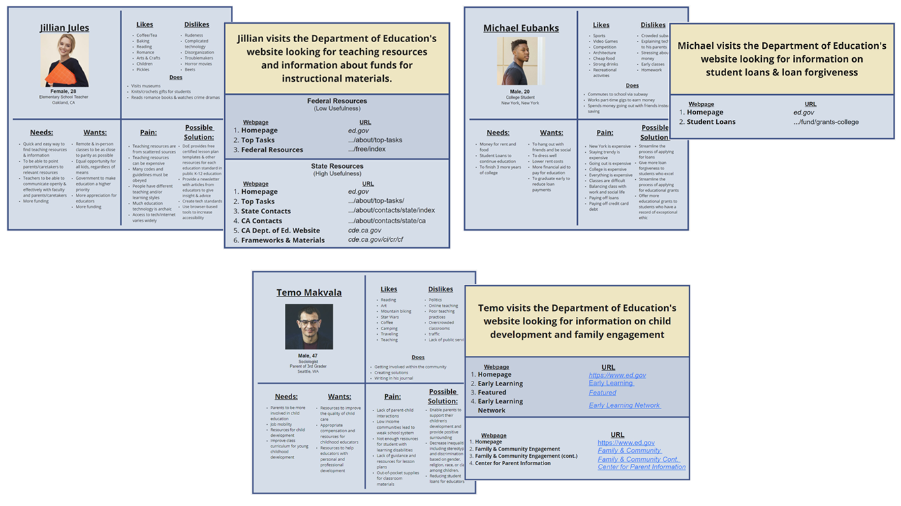
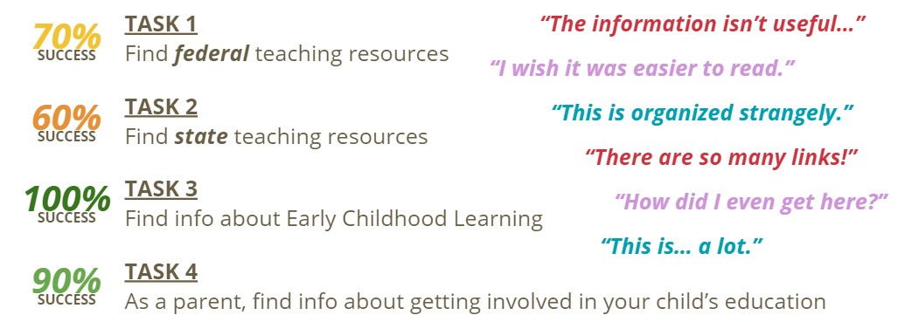
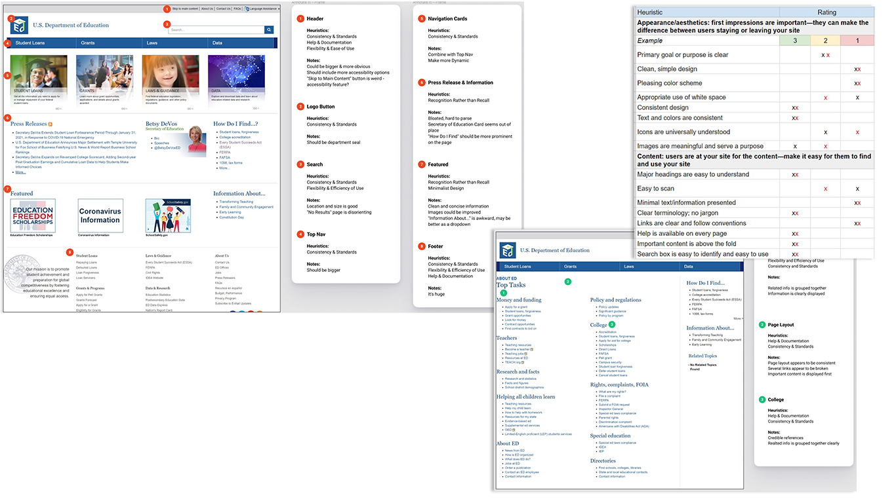
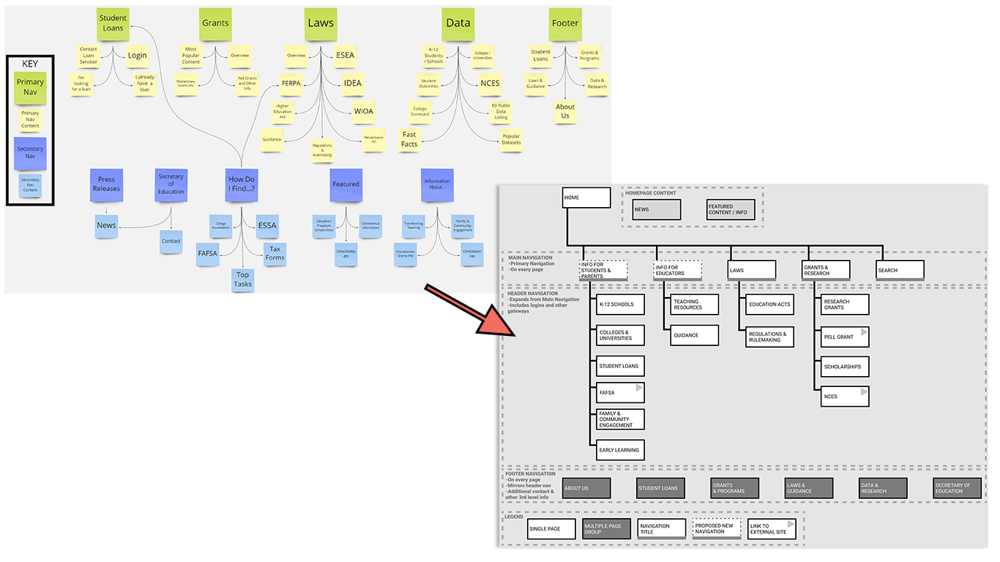
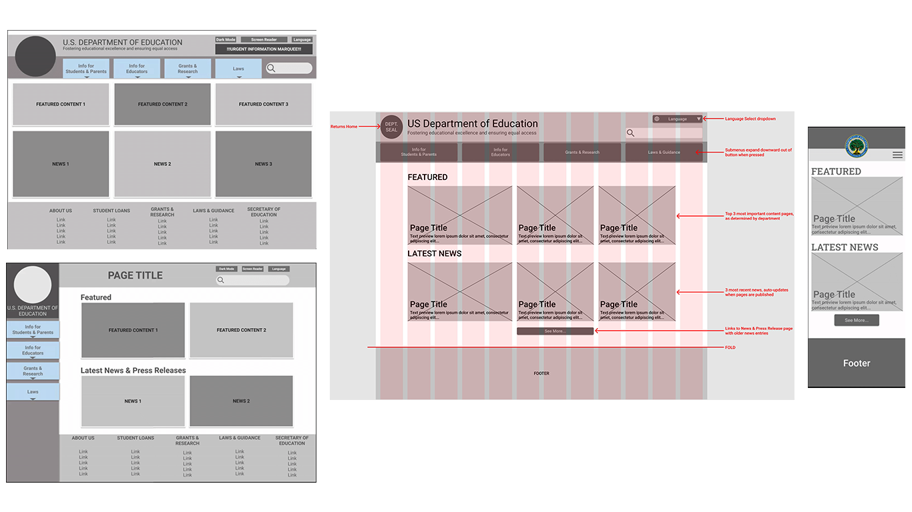
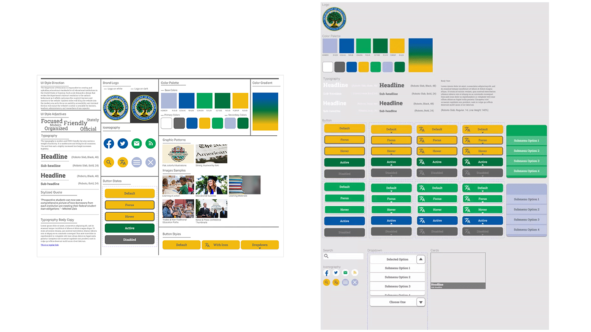
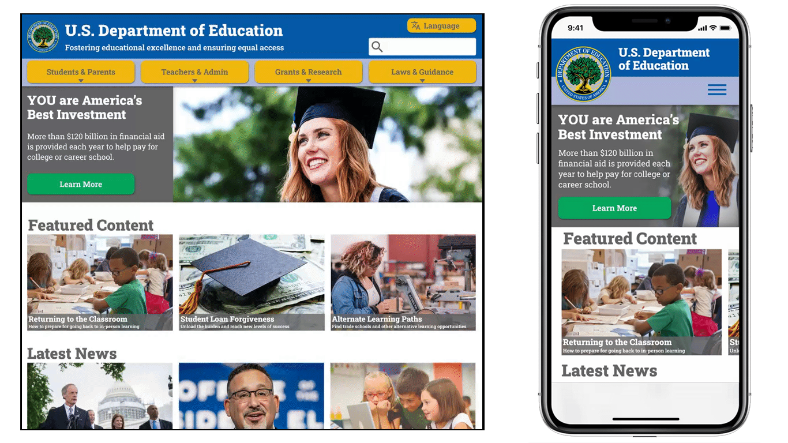

Designing an Information Structure for Ease of Use
January 2021
Team:
Nick So
Tools:
Miro
Figma
Time Frame:
2 Weeks
My Role:
- UX Research:
User Interviews
User Testing
User Personas
Definitions - UX Design:
Heuristic Evaluation
User Flows
Sitemap
Wireframes
Style Guide
Final Prototype
Full
Project Leave-Behind
Overview
Problem
The Department of Education's website is meant to be the go-to solution for finding information pertaining to the education system, but currently the site is unwelcoming and it is difficult for users to find the information they seek.
- Links are poorly labelled and located in confusing areas
- Information hierarchy does not match user expectations
- Too much text and too many links make the info hard to parse
- Aesthetic is lifeless and does not align with department brand
Goal
Reorganize the information hierarchy and overall presentation to make it easy for the user to find their desired content.
- Re-assess what users most-commonly look for and organize that content into concise categories
- Re-design presentation for readability and ease-of-use
- Adjust aesthetic to match branding and invoke positive feelings about education
User Research
Research Plan
Interviews
- Teachers/Educators
- Administrators/Faculty Members
- Students/Parents
- Higher Education/Researchers
Insights
- Users were NOT expecting the site to be a one-stop solution, but rather a directory that points them to the information they seek
- Laws and guidance pertaining to student, parent, and teacher rights were among the most-sought information
- Teachers/Educators avoid the website due to repeated failures to find resources. They use other resources to find information and materials
- Students/Parents find the website fairly useful, but difficult to navigate
- Researchers did not consider the site a destination for grant information
Proto-Personas and User Paths
The users who would visit the Department of Education are fairly easy to imagine (ie. the groups interviewed), and research indicated that those users are visiting the site hoping to quickly find an external resource. Due to that, it was wiser to use simple Proto-Personas instead of full User Personas and reallocate that energy into defining their User Paths.
Jillian is a teacher looking for teaching resources. Her path to finding federal resources can be fairly painless, but finding resources for her state is quite involved with many convoluted steps.
Michael is a young man who is getting ready to graduate high-school. He wants to know more information about student loans and other ways he could receive money for college. His path is extremely simple.
Temo is a parent who wants to know more ways to get involved in his child's education. His path to finding information doesn't require many steps, but finding the correct links to follow takes some effort.
User Testing
The interviewees were asked to complete a series of tasks to determine pain points and assess overall usability of the website. Student Loan information is prioritized first in the current information hierarchy and is very easy to find, so no tasks to find it were included in the user tests.
As expected, finding teaching resources was the most difficult task and finding information about young child development was fairly easy. However, every user commented on the site's usability issues. The most common complaints were:
- Information hierarchy is confusing
- Order of navigation is unexpected
- Pages are not arranged to show the most relevant info first
- Pages are cluttered with small text and too many links
- Links have confusing labels
- Completing the tasks took more time and effort (hunting for links) than desired
Ideation and Definition
Heuristic Evaluation
Assessing the website's heuristics helped define the successes and failures for each part of the website.
The homepage fulfilled a number of technical standards, but suffered from heirarchy issues and poorly-used space. The rest of the site was poorly organized with cluttered groups of links, the "Top Tasks" page even included multiple links with different labels that all led to the same webpage. In response to the user feedback and evaluation results, improving the consistency of page layouts and the efficiency of links and navigation became the top priority.
Sitemap
Data gathered during user interviews and user testing was used to define a new sitemap, prioritizing specific user needs and the most-sought information. This formed the foundation of the site's new information hierarchy.
The final sitemap ended up slightly different from the one shown here, but the consolidation and organization of information is already a stark improvement. By employing the new hierarchy, users would no longer need to hunt through multiple pages, sections, lists, and links to find their info. Instead, they should be able to simply click on the navigation item that pertains to their interest to find the appropriate User Path.
Prototyping and Iteration
Wireframing
Two types of basic navigations were wireframed, and feedback favored the horizontal design. The design underwent a couple iterations using a twelve-column grid for balance and annotations for clarity. A mobile wireframe was also created to begin the site's responsive design.
Since the content itself was not being changed, the headings and sections for the page remained the same. Changing the design to feature larger images and content cards gave the site a more modern look, made the layout more familiar, and prioritized information most relevant to users, all of which made the site more user-friendly.
Style Tile and Style Guide
Using a style tile to define the site's style adjectives and direction helped ensure that each component worked toward establishing the desired tone of "Welcoming, Official, and Organized". The department's seal was used to create the website's color palette. The strong blue and green evoke authority while the bright yellow makes the palette more welcoming and reminiscent of school buses and pencils.
The style tile was expanded into a full Style Guide prior to beginning work on the high-fidelity prototype. In addition to the components created in the wireframes and style tile, a dropdown menu was created in order to reduce the number of links visible on a page while maintaining the amount of information available.
Hi-Fidelity Prototype
High fidelity prototypes for desktop and mobile were created for the site's homepage. Feedback indicated that a hero banner would make the website feel more welcoming, and it offered the opportunity to make a call-to-action (CTA) for users to start the process of applying for student loans.
Most other feedback was positive, only requiring minor tweaks to increase readability and improve clarity of the UX Writing.
The Final Prototype
Conclusion
Reflection
Breaking down the content by the type of user has established a strong base for intuitive navigation. Further defining the information people seek will allow that information to be grouped into categories so that the site can stay clean and modular instead of a cluttered mess of links and walls of text.
I originally thought that the Department of Education should be a service center for students, researchers, and especially educators. However, due diligence & user research revealed that my bias was incorrect. The typical person using the Department of Education’s website was NOT expecting to find resources on the site, they expected the site to direct them to where the resources could be found. That established my new problem - “How can this website more clearly direct users to their desired resource?”
Direction
Next Steps:
- More testing!
- Continue to define the type of information users look for and organize it into categories to expand the information hierarchy further
- Develop the experience for user-specific pages (eg. How can the "K-12 Schools" page be more useful for parents and students?)
- Discover the type of Featured Content and News users want to find on the homepage
- Determine a CMS that can scale as the site's content library grows, ideally one that is simple enough for non-technical persons to use